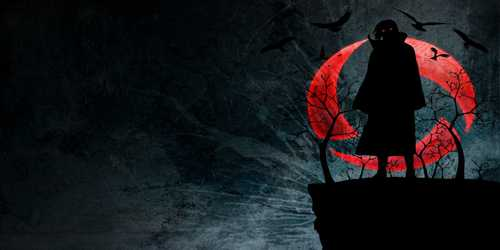
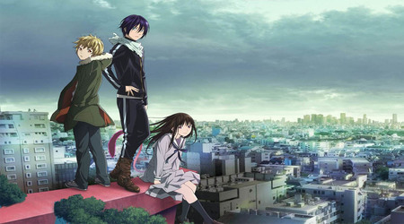

Shounen

Naruto is one of the best shounen action packed anime in the history of animes. A young boy who is a host of a powerful fox named Nine Tails. He trains harder to get stronger and become the most powerful Hokage of all times.about
Crunchyroll has given 4.7/5.0 rating towards this show.
If you want to know more action shows like naruto then click below to know more.
Top Shounen AnimesSlice of Life

Slice of life never used to be as popular as it is today. You could say shows like Clannad, Anohana:The Flower We Saw That Day, Tamako Market are the reason it’s so popular today.
Slice of life is one of the most realistic. That’s partly why it’s so loved, hence “slice of life”.
And because it usually strays from the typical “supernatural” elements, it tends to be more relatable for all ages.
Click below for Slice of Life Animes.
Top Slice of Life AnimesRomance

Romance is sometimes mixed with Slice of Life, so the two genre's have helped each other grow. Romantic Comedy is one of my personal favourite choices.
Animes like My Teen Romantic Comedy SNAFU, Kaguya Sama: Love is War are one of best ones. But romance genre mixes well with any other genres be it action or adventure.
Your Lie in April is one of the best Romanctic Drama and is recommended to watch.
Click below for Romanctic Animes.
Top Romanctic AnimesAction

Action, like Romance, can be mixed with any genre.And that’s why it’ll always be popular. But unlike Romance, Action is a genre that needs other genre’s to stay relevant.
It’s rare to see a pure action anime that’s interesting by itself.
Akame Ga Kill has supernatural elements.
Dragon Ball Z has comedy and fantasy.
Taboo Tattoo has martial arts and fantasy too.
Action needs other genres, but because of other genres, it’s one of the most popular anime genres by far.
Click below for Action Packed Animes.
Top Action AnimesSupernatural

Supernatural is usually associated with magic, and even Shounen from time to time.
Either way this is a very popular anime genre you can’t escape. And that’s not a bad thing. Because a lot of the time there’s something new and fresh that comes out of the supernatural genre.
Noragami is an obvious recent example of this. Along with The Ancient Magus Bride and Code Geass.
Click below for Supernatural Animes.
Top Supernatural Animes